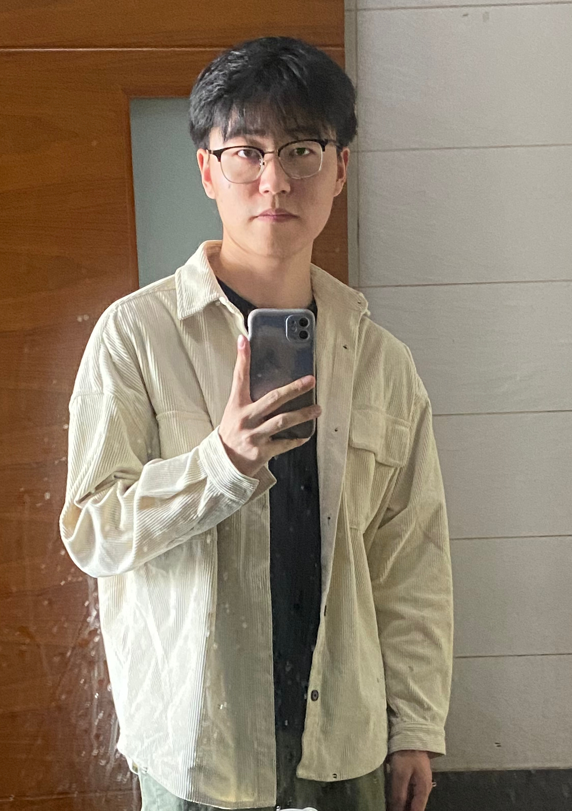

|
Siwei Wu
I am an incoming 2024 Fall PhD in the Manchester NLP group, fortunately, supervised by Prof. Chenghua Lin. Now, I am interning at the Institute for Intelligent Computing (通义千问).
My research interests lie at AIGC including VLMs, music generation, information retrieval, multimodal retrieval. I don't want to restrict my research direction and I enjoy doing jobs in meaningful fields.
Email /
Google Scholar /
Twitter /
Github
|

|
Recent News
2024-05-17 – Our paper (SciMMIR) was accepted by ACL'24! 2023-07-25 – Our paper (Dense-ATOMIC) achieved the ACL'23 Outstanding Paper Award! 2023-05-25 – Our paper (Dense-ATOMIC) was nominated for ACL'23 Best Paper! 2023-05-04 – 2 papers (Dense-ATOMIC and CPNC) were accepted by ACL'23! 2023-4-05 – Created this homepage.
|
Selected Publications (* equal contribution)
|
|
SciMMIR: Benchmarking Scientific Multi-modal Information Retrieval
Siwei Wu, Yizhi Li, Kang Zhu, et al.
ACL 2023
Paper / Code
To bridge this information retrieval gap in the scientific domain, this work develops a specialised scientific MMIR (SciMMIR) benchmark by leveraging open-access paper collections to extract data relevant to the scientific domain.
|
|
|
Dense-ATOMIC: Towards Densely-connected ATOMIC with High Knowledge Coverage and Massive Multi-hop Paths (* ACL 2023 Outstanding Paper Award)
Xiangqing Shen, Siwei Wu, Rui Xia.
ACL 2023
Paper / Code
This work mainly solves the bipartite graph properties of commonsense knowledge graph ATOMIC, mines potential multiple paths in ATOMIC, and builds a more complete knowledge graph Dense-ATOMIC.
|
|
|
Commonsense Knowledge Graph Completion Via Contrastive Pretraining and Node Clustering
Siwei Wu, Xiangqing Shen, Rui Xia.
ACL 2023 findings
Paper / Code
This work alleviates the problems of edge sparsity and nodes redundancy in the commonsense knowledge graph, and proposes a new commonsense knowledge graph completion framework.
|
Selected Awards
National Encouragement Scholarship, Jiangnan University, 2018 Honorable Mentions of Mathematical Contest in Modeling, 2020 ACL 2023 Outstanding Paper Award
Last modified in Nov. 2022. Design and source code from Jon Barron.
|
|